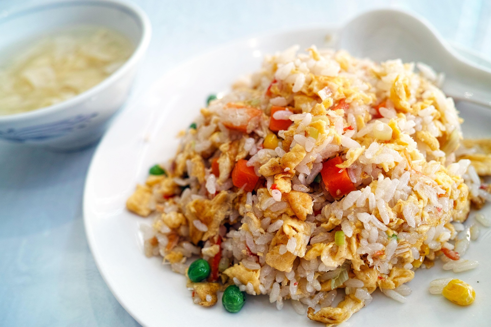

Home
Nasi goreng

Nasi goreng is a local cuisine from Indonesia that made from
leftover rice, sweet soy sauce, vegetables, and some seasoning.
Nasi goreng traditionally also served with eggs and crackers.
- 3 cups leftover/cooked rice
- 1 Egg, beaten
- a tablespoon vegetable oil
- 100 gram mustard vegetable, chopped
- 2 clove onion, chopped
- 1 clove garlic, minced
- 2 pieces red chile peppers, chopped
- 3 tablespoons kecap manis (soy sauce)
- 1 teaspoon seasoning (flavor enhancer or smg)
- Heat vegetable oil in a wok or sizeable pan over high heat.
- Stir in onion, chile peppers, and garlic. Cook and stir until onion is soft.
Pour and stir egg; mix well. Cook and stir for about 1 minute.
- Mix in leftover rice, sweet sauce, vegetable, and seasoning;
cook until rice is heated through and mix well, 3-5 minutes.
- Serve nasi goreng with crackers